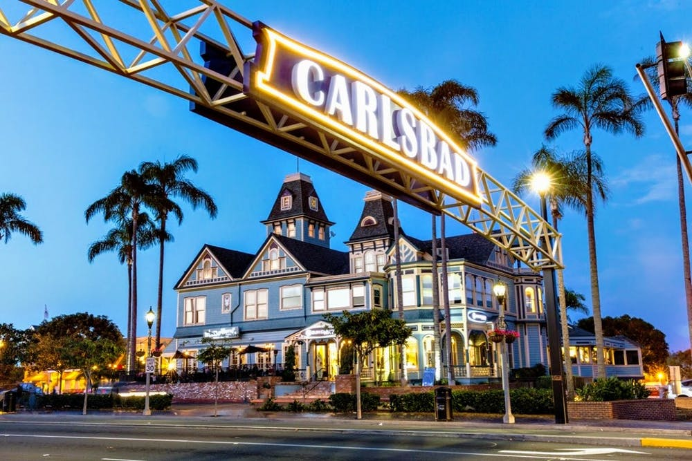
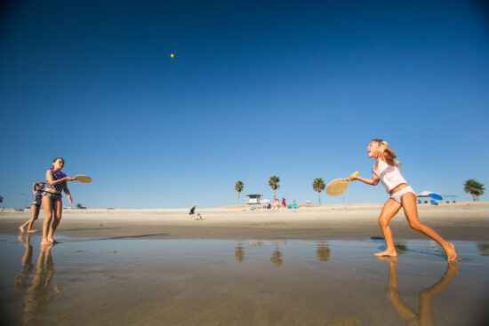

California Fresh!
Discover our Home - Carlsbad, California
No one can deny that living in Carlsbad is both a joy and a privilege. From seven miles of uninterrupted beaches to the famous Flower Fields, lagoons, hiking trails, shopping outlets, public art, and golfing, Carlsbad boasts some of the best Southern California has to offer.

They don’t call Carlsbad the “Village by the Sea” for nothing. This coastal city has a variety of outdoor recreational activities that incorporate its close proximity to the Pacific Ocean and local wetlands, including Agua Hedionda Lagoon, Batiquitos Lagoon, and Buena Vista Lagoon. Outdoor enthusiasts can do everything from kayaking, windsurfing, and boating to wakeboarding, water skiing, sailing, and fishing.

Carlsbad has over 7 miles of pristine beaches.Depending on your mood, the beaches along the Carlsbad coastline can be your place to catch waves, stretch out and relax, let the kids run around, or take a long walk.